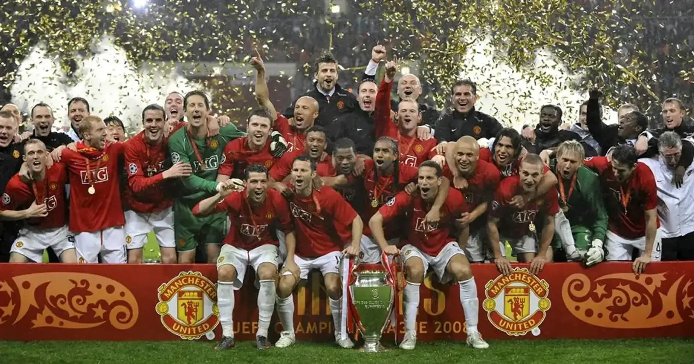

La era dorada de los Diablos Rojos

La historia de los Diablos Rojos del Manchester United entre 1992 y 2013 representa una de las etapas más exitosas del fútbol inglés. Durante estos años, el equipo estuvo dirigido principalmente por el legendario entrenador Sir Alex Ferguson, quien construyó una generación capaz de competir durante más de dos décadas. Con disciplina, mentalidad ganadora y un fútbol ofensivo, el Manchester United se convirtió en uno de los clubes más reconocidos del mundo.
Esta época reunió a futbolistas extraordinarios como Eric Cantona, David Beckham, Ryan Giggs, Paul Scholes, Roy Keane, Gary Neville, Rio Ferdinand, Wayne Rooney y Cristiano Ronaldo. También destacó la llamada “Clase del 92”, formada por jóvenes talentos como Beckham, Giggs, Scholes, Gary Neville y Phil Neville, que llegaron a tener un papel importante en el crecimiento del equipo. Su combinación de experiencia, juventud y talento ayudó a construir una identidad reconocible.
El dominio del Manchester United se hizo especialmente visible en la Premier League. El club conquistó numerosos campeonatos ingleses, entre ellos los de las temporadas 1992-93, 1993-94, 1995-96, 1996-97, 1998-99, 1999-2000, 2000-01, 2002-03, 2006-07, 2007-08, 2008-09 y 2010-11. Estos títulos demostraron la capacidad del equipo para renovarse, superar a sus rivales y mantenerse en la cima durante distintas generaciones de futbolistas.

Uno de los momentos más inolvidables ocurrió en la temporada 1998-99, cuando el Manchester United consiguió el histórico triplete: ganó la Premier League, la FA Cup y la UEFA Champions League. La final europea se disputó el 26 de mayo de 1999 frente al Bayern de Múnich. Aunque el equipo alemán ganaba por 1-0 durante gran parte del encuentro, el Manchester United remontó en los minutos finales con goles de Teddy Sheringham y Ole Gunnar Solskjær, logrando una victoria que pasó a la historia.
Años después, el club volvió a alcanzar la gloria europea. En la temporada 2007-08, liderado por jugadores como Cristiano Ronaldo, Wayne Rooney, Ryan Giggs y Rio Ferdinand, conquistó la Champions League. En la final, disputada en Moscú, empató 1-1 con el Chelsea y ganó en la tanda de penales. Cristiano Ronaldo fue una de las grandes figuras de aquella campaña y recibió el Balón de Oro de 2008 por su extraordinario rendimiento.
La etapa de Ferguson también estuvo marcada por su capacidad para reconstruir el equipo. Después de la salida de algunas figuras importantes, el Manchester United incorporó nuevos talentos y mantuvo su competitividad. En 2012-13, durante la última temporada de Ferguson como entrenador, el club ganó nuevamente la Premier League, consiguiendo su vigésimo campeonato de liga inglesa. Aquel título cerró una etapa extraordinaria y marcó el final de una era que transformó la historia moderna del club.
Lo que convirtió a los Diablos Rojos en una generación de culto no fueron solamente sus trofeos, sino también su carácter competitivo y su capacidad para protagonizar remontadas memorables. Sir Alex Ferguson construyó un equipo que combinó liderazgo, talento, juventud y ambición, mientras figuras como Giggs, Scholes, Beckham, Rooney y Cristiano Ronaldo dejaron su huella en distintas etapas. Sus conquistas nacionales y europeas consolidaron al Manchester United como uno de los grandes referentes del fútbol mundial.
La historia de los Diablos Rojos dejó una lección sobre la importancia de la constancia: alcanzar la grandeza puede tomar años, pero mantenerla exige trabajo, adaptación y una mentalidad colectiva. Entre 1992 y 2013, el Manchester United no solo ganó títulos: construyó una identidad, formó generaciones de aficionados y creó recuerdos que permanecen vivos en la historia del fútbol.